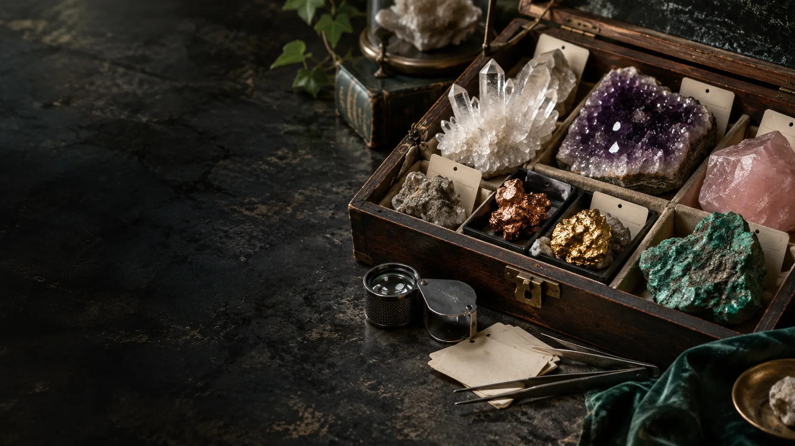

Clear quartz
Purification and purity · medieval Christian symbolism
Walters Art Museum · Rock crystal object 41.62
MATERIAL LIBRARY / STRUCTURE AND MEANING
A physical configuration has provenance, manufacture and measurements. Its personal or traditional meanings have named sources, context and a person who interprets them.
The source palette spans quartz varieties, minerals, metals, pigments and organic gems. A meaning is attributed to a named contemporary practice, historical source or living tradition. It is not presented as an established physical or clinical effect.
The MC-ID links origin, recipe, process, geometry, measurements and installed location. A component or process change creates a linked revision. A session’s assembly record identifies the exact material configuration present.
Clear Mind, Earthen Root, Ocean Light and Solar Code are archive blend names. Their meaningful combinations do not establish a finished recipe. Specimens compare incorporation routes, emission and particle release, moisture, cleaning and physical change.
A sealed cassette, inlay or replaceable panel may be studied where a material would be unsuitable as dispersed aggregate. Conductivity, fragility, moisture response and emissions remain material-specific questions. Kintsugi seams retain their nonstructural role.
An ochre reference to Tasmanian Aboriginal living knowledge does not transfer knowledge rights or establish authority on Quandamooka Country. Cultural context, permissions and local relationships remain part of the provenance record.
41 materials. Meanings attributed to their sources. Incorporation questions remain in the original document.
41 materials
Purification and purity · medieval Christian symbolism
Walters Art Museum · Rock crystal object 41.62Tenderness, forgiveness, heart opening · Judy Hall
Judy Hall · Crystal healingReflective calm and protection · Judy Hall
Judy Hall · Crystal healingAbundance, creative confidence · contemporary practice
Mineralism · Metaphysical propertiesGrounded release and protection · Judy Hall
Judy Hall · Crystal healingFocused intention, transformation · contemporary practice
Mineralism · Metaphysical propertiesEmotional ease, renewal · contemporary practice
Healing Crystals · Green aventurinePatient expression, peace · contemporary practice
Mineralism · Metaphysical propertiesCreative courage, motivation · contemporary practice
Mineralism · Metaphysical propertiesVitality, resilient courage · contemporary practice
Mineralism · Metaphysical propertiesSelf-acceptance, hopeful renewal · contemporary practice
Mineralism · Metaphysical propertiesSteadiness, courage, perseverance · contemporary practice
Mineralism · Metaphysical propertiesProtection, boundaries · Judy Hall
Judy Hall · Crystal healingIntuition, spiritual protection · Judy Hall
Judy Hall · Crystal healingIntuition, cyclical renewal · contemporary practice
Mineralism · Metaphysical propertiesEnthusiasm, confident independence · contemporary practice
Mineralism · Metaphysical propertiesComposure, courageous speech · contemporary practice
Mineralism · Metaphysical propertiesHonesty, harmonious connection · contemporary practice
Mineralism · Metaphysical propertiesDiscernment, focused learning · contemporary practice
Mineralism · Metaphysical propertiesSpiritual illumination · Judy Hall
Judy Hall · Crystal healingSpiritual awareness, intention · contemporary practice
Mineralism · Metaphysical propertiesGrounding, strength, balance · contemporary practice
Mineralism · Metaphysical propertiesAmbition, determined action · contemporary practice
Mineralism · Metaphysical propertiesHeart transformation, responsibility · contemporary practice
Mineralism · Metaphysical propertiesDevotion, grounded courage · contemporary practice
Mineralism · Metaphysical propertiesWise expression and Egyptian divine renewal
Yale Peabody · Gilded mummy maskHonest reflection and ancient Mexican divination
Getty · Obsidian Mirror: Through the MirrorFlourishing life, fertility · Ancient Egypt and Hathor
The Met · Turquoise in Ancient EgyptVirtue and transcendence · Chinese and Daoist traditions
The Met · Collection object 42059Self-worth, compassionate independence · contemporary practice
Mineralism · Metaphysical propertiesCalm, acceptance, transition · contemporary practice
Mineralism · Metaphysical propertiesGrounding, energetic harmony · contemporary practice
Mineralism · Metaphysical propertiesAwakening, transformative renewal · contemporary practice
Mineralism · Metaphysical propertiesSolar vitality, regenerative continuity · Ancient Egypt
Yale Peabody · Gilded mummy maskLunar correspondence, ritual purity · Ancient Egypt
The Met · Silver in Ancient EgyptVenus and Aphrodite · European planetary alchemy
Getty · David Brafman on AlchemySpiritual connection and cultural continuity · Tasmanian Aboriginal living knowledge
The Orb · OchreSacred-space purification · Shinto practice
Kokugakuin University · Encyclopedia of ShintoPurity, modesty, lunar correspondence · historical lore
Gemological Institute of America · Pearl History and LoreProtection and regenerative transition · ancient amulets
Getty · Ancient Carved Ambers, introductionProtective care · historical amulets
The Met · Collection object 2255No materials match.
Traditional and personal associations are meaning records, not established therapeutic properties. Source palette: Geode Development, pp. 15–16.
Editorial summaries draw on the supplied editions. Proposed systems and concept artwork describe development directions. References retain their specific study, method or cultural context.